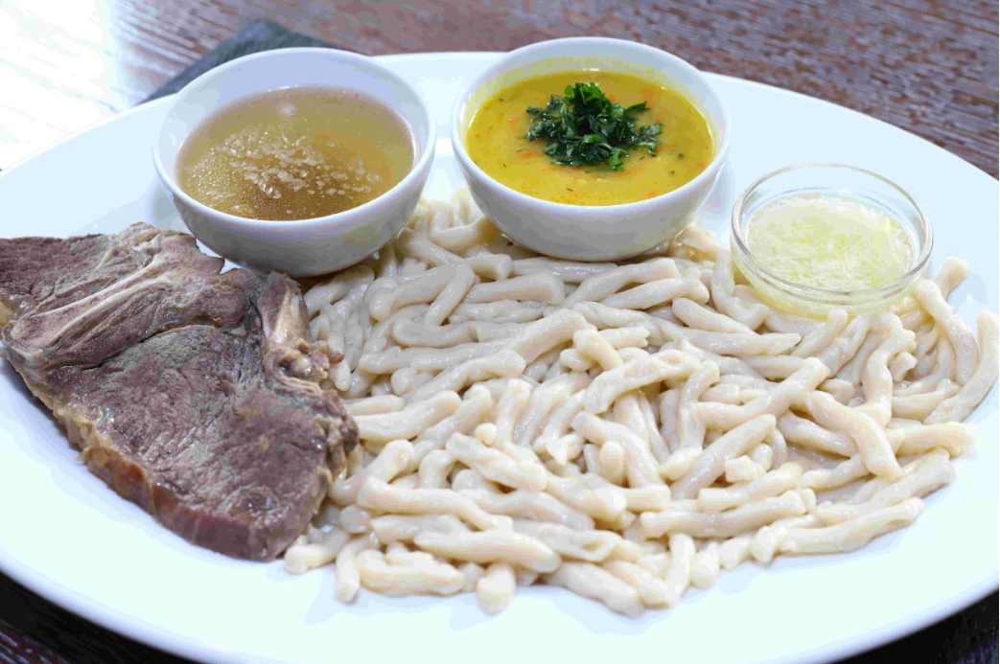

Жижиг Галнаш

Описание
Жижиг-галнаш — это традиционное блюдо вайнахских народов: чеченцев и ингушей.
В переводе с чеченского языка «жижиг-галнаш» буквально означает «мясо с галушками». В традиционном рецепте используют баранину или говядину — мякоть или мясо на косточке для насыщенного бульона. Сочность и сытность главного ингредиента и простота галушек делают блюдо уникальным в своем роде.
Существует мнение, что в изначальном рецепте галушки изготавливали в форме медальонов, а современный вариант — вытянутые кусочки теста — позаимствовали у жителей Средней Азии.
Ингредиенты
- Говядина
- Мука
- Вода
- Яйцо
- Соль
- Чеснок
- Перец черный
Шаги
- Положите мясо в большую кастрюлю и залейте его полностью водой. После закипания уменьшите огонь до слабого. Периодически снимайте пену.
- Параллельно с варкой мяса начните готовить галнаш — галушки. Возьмите миску, вбейте в нее яйцо, влейте воду и насыпьте соль. Взболтайте смесь вилкой. Добавьте просеянной муки и замесите тесто.
- Раскатайте тесто в пласт толщиной 1 см и нарежьте его полосками. Полоски разрежьте наполовину, чтобы получить кусочки одинаковой длины. Прижмите каждую получившуюся галушку пальцами и притяните к себе. Оставьте кусочки теста на столе, чтобы они немного подсохли.
- Когда мясо станет мягким и будет легко отходить от кости, если она есть, добавьте в бульон соль и молотый перец.
- Достаньте мясо из бульона и оставьте на тарелке, чтобы оно слегка остыло. Бульон процедите и разделите на две неравные части: 1/3 — для будущего соуса, в оставшейся — отварите галушки. Когда они всплывут, варите 2-3 минуты и потом откиньте на дуршлаг.
- В бульон, который отложили для соуса, добавьте измельченный чеснок, душистый перец и соль по вкусу — соус готов.
- Подавайте блюдо на больших тарелках: сперва выложите галушки, а сверху — мясо небольшими кусками. Посыпьте ингредиенты измельченной зеленью.